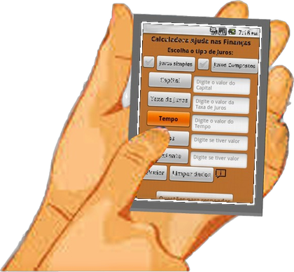

Como podemos ajudar você hoje?
Escolha o caminho de acordo com o que você precisa.

PRECISO CALCULAR
Calculadora Financeira
Use uma ferramenta rápida para resolver cálculos e problemas de matemática financeira.
- Juros simples
- Juros compostos
- Capital, taxa e tempo
- Juros e montante
Abrir Calculadora →
QUERO APRENDER
Ambiente de Aprendizagem
Aprenda matemática e educação financeira passo a passo e aplique o conhecimento em situações do dia a dia.
- Aprenda os conceitos
- Faça os cálculos
- Interprete os resultados
- Tome decisões financeiras
Quero Aprender →